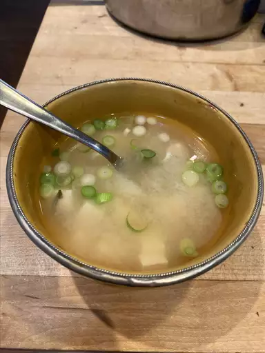

Miso Soup

Description
Miso Soup is a comforting Japanese soup made with kombu and miso paste.
Ingredients
- 4 cups water
- 1 (4 inch) piece dashi kombu (dried kelp)
- 1/2 cup bonito flakes
- 6 ounces tofu, cut into chunks
- 1 teaspoon dried wakame
- 3 tablespoons miso paste
- 1/4 cup chopped green onions
Steps
-
Heat water in a large pot over low heat. Add kombu and cook until just
simmering. Stir in bonito flakes, then remove dashi stock from the heat. Let
dashi sit, uncovered, for 5 minutes. Strain and set aside.
-
Heat 3 1/2 cups dashi in a pot over medium heat. Add tofu and wakame and
stir to combine. Remove 1 cup warmed dashi to a small bowl and whisk in miso
paste. Pour miso mixture back into the pot with remaining dashi. Stir until
warmed through. Serve garnished with chopped green onions.